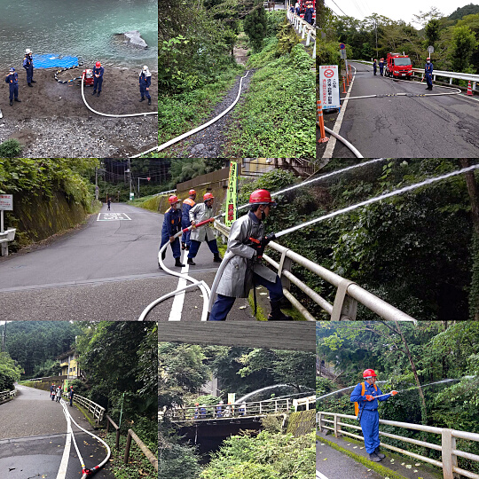

第4分団
| 濱中分団長を筆頭に２１名で、地域の防災活動に努めます。 | ||||||||||||||||||||||||||||||||||||||||||||||||
濱中分団長 |
|
|
||||||||||||||||||||||||||||||||||||||||||||||
管轄地域は小瀬戸・久須美・小岩井・永田・永田台を担当しています。
令和2年度トピックス
◆令和2年10月15日（木）飯能日高消防署屋外訓練場にて夜間放水訓練を行いました。"先月の中継送水訓練の反省と復習を踏まえ、ポンプ2台を使った放水訓練を行いました。
◆令和2年9月13日
2回目以降担当者を入れ替えて、1線2口で放水開始、50mmホースを連結しガンタイプノズルも使用しました。今年はコロナ禍の中、なかなか訓練が出来ませんでしたが、有意義な訓練になりました。

令和元年度トピックス
◆令和1年11月2-3日飯能河原にて、花火祭りの警備を行いました。飯能祭りの警備も行いました。
◆令和1年7月7日（日）
中継放水訓練を行いました。
◆令和1年5月19日（日）
分団訓練を行い、小岩井地区にて、自然水利より、放水訓練を実施しました。
◆平成31年4月18日（木）
防災センターにて、放水訓練を行いました。
◆平成31年4月14日（日）
新車両の安全祈願式を行いました。また、新車両配属式・入団式に出席しました。